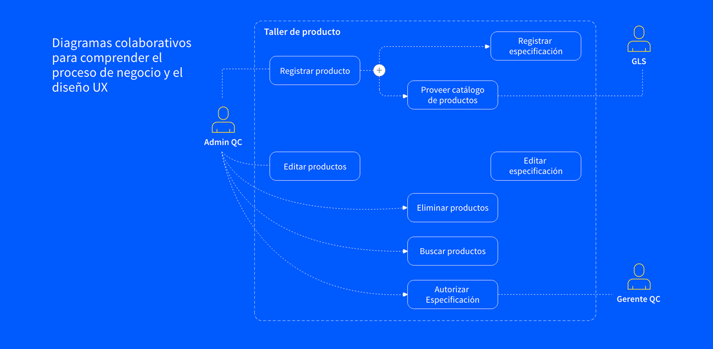

/ Sobre el proyecto
Meta: Desarrollar una app Android y de escritorio, implementando nuevas reglas de negocio y mejoras de usabilidad para personalizar y configurar las especificaciones de los productos.
Problema: La aplicación actual es lenta y poco práctica para el contexto en el que se utiliza. Los trabajadores que operan en cámaras refrigeradas, equipados con ropa especial, suelen experimentar fallos de batería en las tabletas, lo que provoca la pérdida de datos previamente registrados. Como resultado, prefieren usar papel y bolígrafo, aunque eso implique trabajar el doble.
Además, la aplicación contiene campos irrelevantes y no permite al administrador implementar nuevas especificaciones o reglas de negocio para las inspecciones, ya que no se incluyeron inicialmente.
Mi rol: Analizar los datos de investigación para comprender el proceso completo y desarrollar soluciones iniciales enfocadas en los puntos de dolor del usuario y los problemas identificados.
/ Fase de investigación del usuario
Creación de diagramas de flujo para mapear procesos, comunicación, herramientas, formatos, flujos de aprobación y arquitectura de la información.


/ Primeros bocetos para aterrizar ideas
Posteriormente, se desarrollaron diferentes soluciones realizando bocetos con la información recopilada, guiado por los insights obtenidos. Esto permite identificar los datos clave necesarios para el registro en la aplicación, asegurando una inspección de calidad precisa y facilitando la toma de decisiones informadas.
Desarrollar soluciones para reducir tiempos mediante la colaboración con los equipos de contenido e investigación, definiendo estrategias para presentar la información de forma clara y eficaz, identificando campos innecesarios e incorporando elementos visuales, como imágenes de defectos frecuentes, características aceptadas del producto y datos en rangos o porcentajes, que facilitan la toma de decisiones y aumentan la eficiencia operativa.

/ Wireframes y flujos de usuario
Se desarrollaron wireframes y prototipos de baja fidelidad para presentarlos al cliente, mostrando soluciones trabajadas con el equipo interno. Esto permitió recopilar retroalimentación, asegurar el alineamiento con las necesidades del cliente y obtener aprobación para definir el estilo de diseño e implementar los lineamientos de marca.

/ Pantallas de alta fidelidad
Estas soluciones desarrolladas para Android y escritorio integran la identidad visual de la marca y abordan los requerimientos del cliente relacionados con la inspección de productos.

/ Sobre el proyecto
Un proyecto que comenzó desde la fase de inicio (kickoff), donde el equipo buscaba presentar soluciones viables, proponer mejoras estratégicas e integrar implementaciones tecnológicas basadas en las necesidades reales del cliente.
Meta : Entender el negocio, recopilar insights e identificar los perfiles clave involucrados en el proceso. Detectar puntos de dolor y oportunidades, desarrollar esquemas del estado actual y futuro, y proponer soluciones basadas en los hallazgos.
Problema:
De las sesiones con usuarios se identificaron los siguientes insights clave:
* Falta de una sección de soporte y asesoría.
* Dificultad para reemplazar productos dañados de manera rápida.
* No hay un seguimiento de productos necesarios para iniciar un proyecto.
* Incertidumbre respecto a la instalación de algunos productos y falta de retroalimentación profesional sobre el proceso de instalación.
Mi rol: Diseñé y definí las ilustraciones de las personas, formateé la información para los esquemas (blueprints) y establecí la paleta de colores, tipografía e iconografía.
Colaboré con el equipo de investigación para desarrollar y perfeccionar conceptos de soluciones futuras. Además, creé un mood board para idear y conceptualizar diferentes soluciones, lo que llevó al diseño de pantallas para plataformas móviles y de escritorio basadas en los hallazgos obtenidos.
/ Journey map actual y estado futuro
Definir los esquemas actuales y futuros, establecer la guía de estilo y resaltar la información clave, puntos de dolor, áreas de oportunidad y escenarios. Identificar las interacciones de los usuarios, las herramientas, los tiempos de las tareas y las tecnologías necesarias para el desarrollo de la solución.

/ User Personas y Escenarios
Diseñar ilustraciones de personas, generar ideas para escenarios y acciones, y desarrollar diferentes fases con interacciones clave de usuarios y propuestas de valor, con el fin de representar la propuesta en el documento para el cliente.

/ Wireframes y flujos de usuario
Estas pantallas, diseñadas para móvil y escritorio, representan soluciones basadas en los insights y hallazgos obtenidos durante la investigación. Fueron creadas para conceptualizar y definir soluciones futuras, involucrar al cliente y presentar de manera más específica las áreas de oportunidad.

/ Sobre el proyecto
Meta :
Desarrollar una aplicación para controlar la entrada y salida de productos, así como el abastecimiento.
Problema:
Al final de cada año, realizan un inventario para justificar los gastos y solicitar el presupuesto para el año siguiente.
No hay registro del inventario de productos · Gastos injustificados
· Falta de comunicación
Mi rol:
Comencé identificando las necesidades y problemas de los usuarios, y desarrollé un plan de investigación con objetivos claros y pasos definidos. También realicé entrevistas para comprender sus flujos de trabajo, la interacción con otras áreas y cómo comparten documentos al solicitar materiales.
/ Diagramas y Flujos de usuario
Elaboré un cuestionario para recopilar información, ya que no se contaba con datos previos. Además, colaboré con el equipo de desarrollo para crear los primeros diagramas de flujo e identificar perfiles y roles de usuario.

/ Bocetos e ideación
Después de recopilar la información, creé un moodboard para explorar ideas y conceptos, definiendo elementos de diseño alineados con la identidad de la marca, como la paleta de colores, la iconografía y la tipografía, que sirvieron como base para el desarrollo del sistema de diseño.
Comencé realizando bocetos iniciales para definir las pantallas principales y luego colaboré con los desarrolladores para refinar la navegación y establecer la arquitectura de la información. Identificamos secciones clave como el panel principal (dashboard), reportes, artículos, gestión de pedidos y administración de almacén.

/ Definición del sistema de diseño
Desarrollé el sistema de diseño desde cero, colaborando estrechamente con el equipo de desarrollo para definir entregables, establecer guías de diseño y dar seguimiento al progreso mediante revisiones periódicas.
Definimos las variantes tipográficas (títulos, subtítulos, párrafos), las paletas de colores primarios y secundarios, los mensajes de éxito y error, los estilos y estados de los botones, así como la iconografía e imágenes.

/ Pantallas de alta fidelidad
Se definió la retícula y se desarrollaron pantallas de alta fidelidad, implementando el sistema de diseño previamente establecido para el registro y gestión de la solución del cliente.